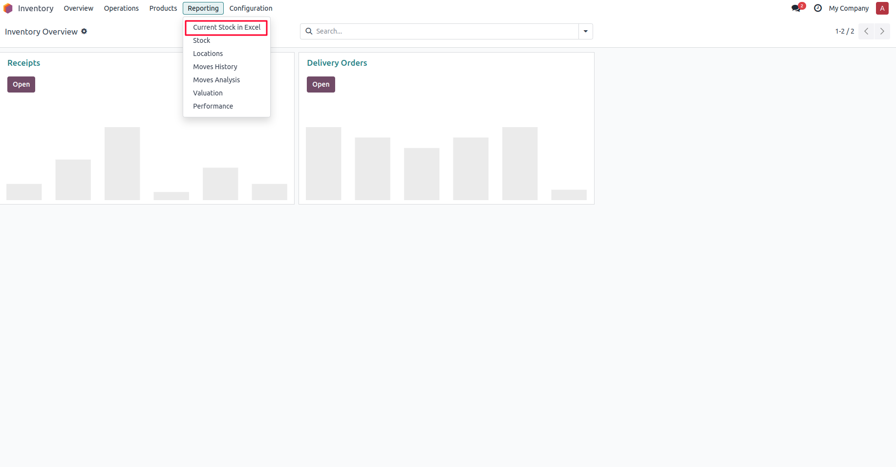
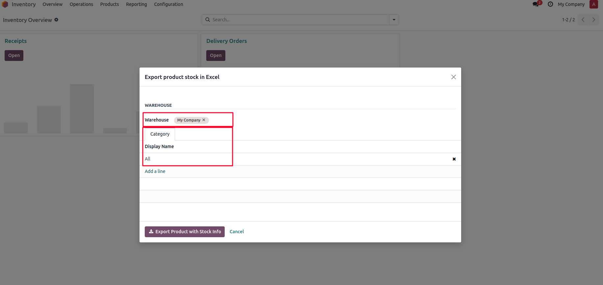
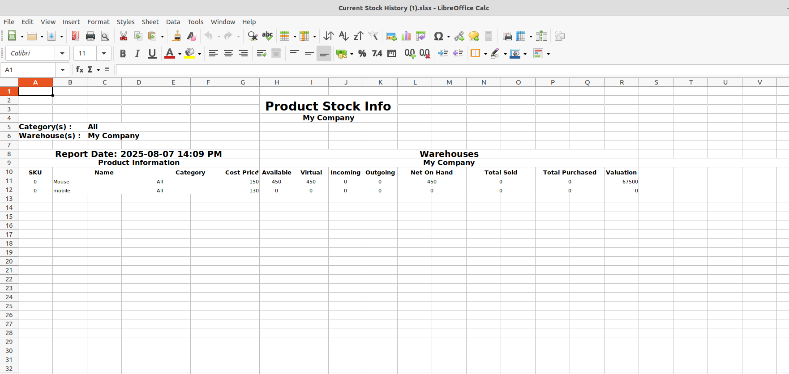

Purpose: This module allows users to export current product stock levels into an Excel file (.xlsx format) for reporting, reconciliation, and analysis. It adds a new menu under Inventory > Reporting for easy access and offers filtering options before export.



After installing the module, a new menu item is added under Inventory > Reporting.
When the user clicks Current Stock in Excel, a wizard opens showing:
Clicking Export Product will generate and download an Excel file (.xlsx) with filtered product stock information.
1. Navigate to Inventory > Reporting > Current Stock in Excel
2. Select the desired Warehouse and Product Category
3. Click Export Product
4. Excel report is downloaded automatically
- Saves time in preparing manual stock reports
- Improves accuracy and consistency in reporting
- Helps in financial audits, warehouse reviews, and physical inventory counting
Developed by Apagen Solutions